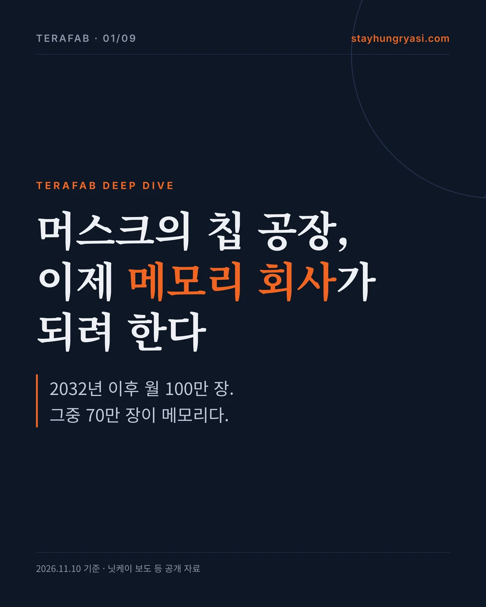
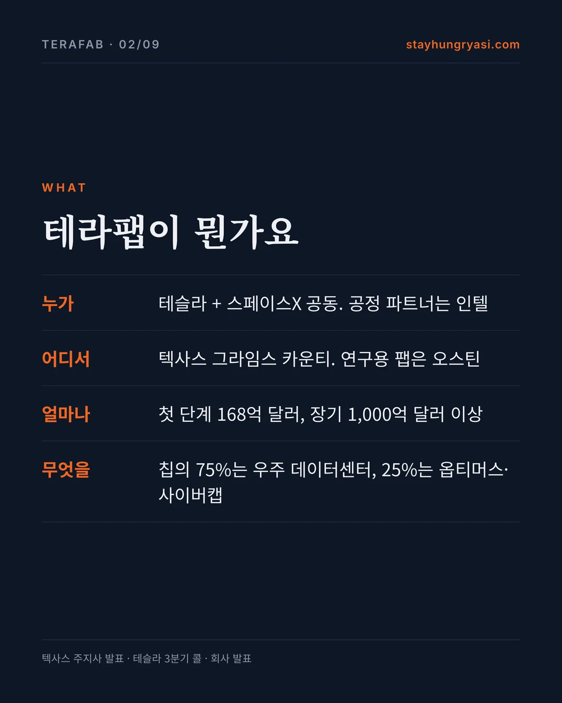
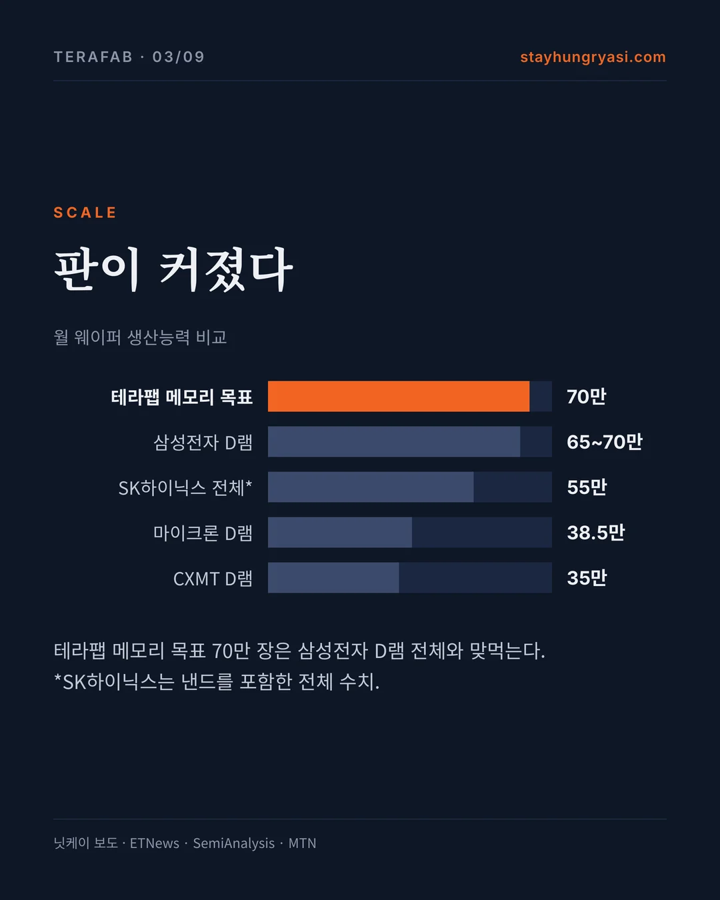
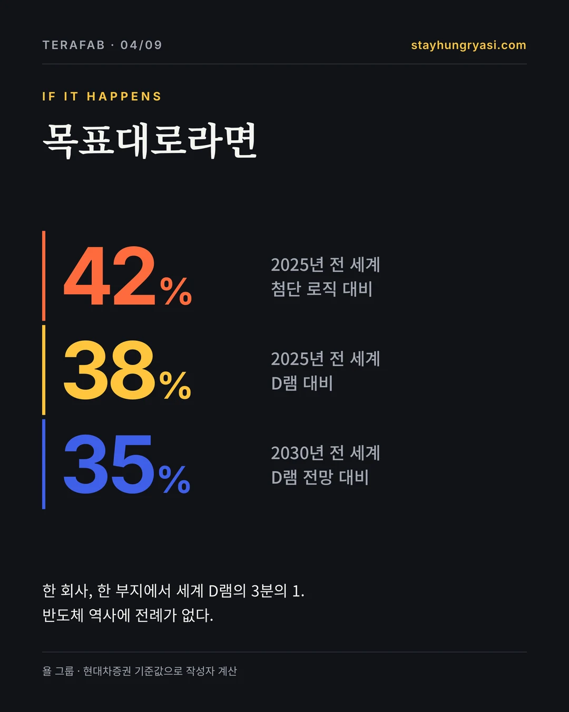
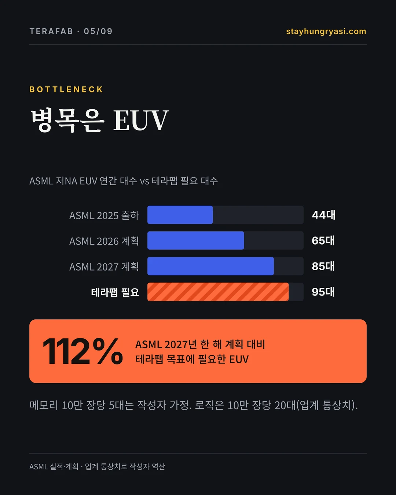
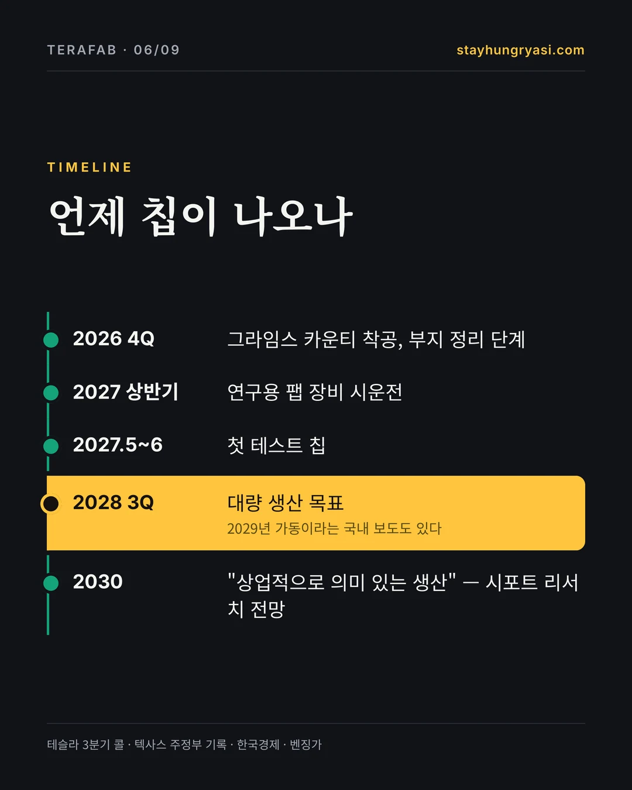
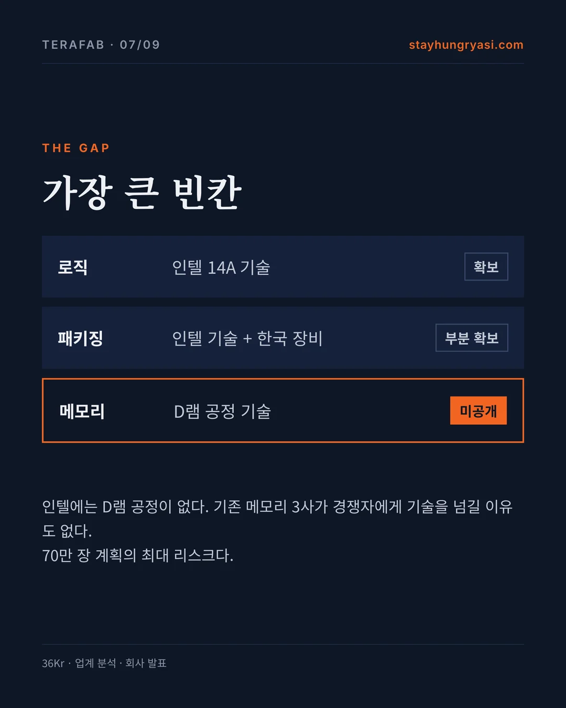
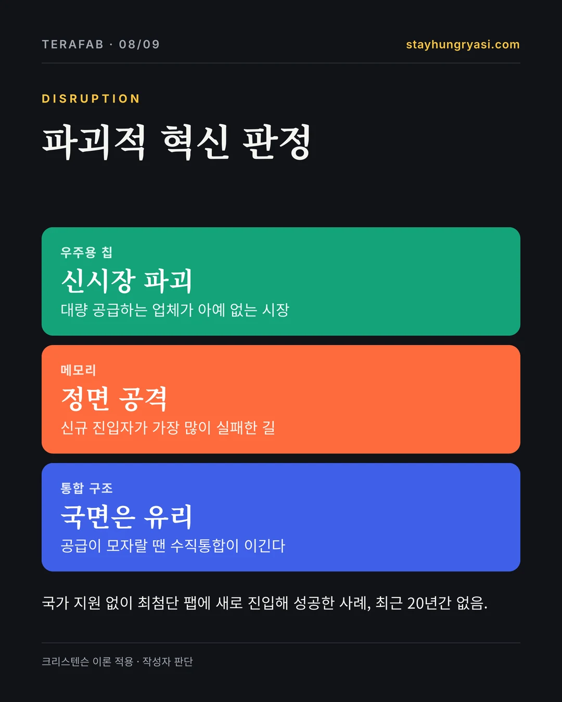
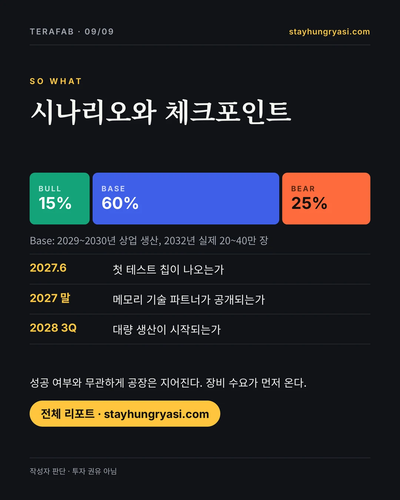

데이터 기준 2026년 11월 10일(한국 시간) · stayhungryasi.com
표기 규칙: [사실] 확정 사실 · [회사] 회사 주장 · [보도] 언론 보도·시장 추정 · [판단] 작성자 판단. 시나리오 확률은 작성자의 주관적 판단이다. 직전 분석의 주장 33건을 원출처와 다시 대조해 판정했다.
고지: 이 리서치는 AI(Claude)를 써서 작성했다. 투자 권유가 아니다.
카드뉴스 9장으로 보기
핵심만 9장으로 요약했다. 이미지를 누르면 크게 볼 수 있다.


















핵심 요약
테라팹은 테슬라와 스페이스X가 텍사스에 짓는 반도체 공장이다. 11월 9일 닛케이 보도로 목표가 2032년 이후 월 100만 장, 그중 70만 장은 메모리로 커졌다. 삼성전자 D램 전체와 비슷한 규모다. 장비 발주라는 실제 돈은 움직이기 시작했다. 하지만 메모리 기술을 어디서 가져올지, 수율, 두 회사의 비용 분담은 아직 하나도 정해지지 않았다.
| 구분 | 내용 | 근거 |
|---|---|---|
| 첫 단계 투자 | 168억 달러 · 텍사스 그라임스 카운티 | [사실] 텍사스 주지사 발표 |
| 장기 투자 | 1,000억 달러 이상 · 비용 분담 미정 | [회사] 테슬라 3분기 콜 |
| 최종 생산능력 | 월 100만 장 (메모리 70만 · 로직 30만 이상) | [보도] 닛케이 |
| 첫 테스트 칩 | 2027년 5~6월 | [회사] 테슬라 3분기 콜 |
| 대량 생산 | 2028년 3분기 목표 · 2029년 가동 보도도 있음 | [회사] / [보도] 한국경제 |
| 칩 용도 | 우주 데이터센터 75% · 옵티머스·사이버캡 25% | [사실] 회사 발표 |
| 공정 파트너 | 인텔 14A · TSMC와 협의 중 (미합의) | [사실] 회사·보도 |
한 줄 판단 [판단] — 공장은 지어진다. 그러나 "메모리 70만 장"을 받칠 기술원이 비어 있는 한, 테라팹은 아직 계획서다.
1. 지난 30일, 무엇이 바뀌었나
| 날짜 | 내용 | 근거 |
|---|---|---|
| 2026-10-20 | 스페이스X 3분기 실적 콜: 메인 부지 대량 생산 목표 2028년 3~4분기 | 회사 |
| 2026-10-20 | 스페이스X 3분기 매출 146억 달러, 순이익 44억 달러, 분기 설비투자 196억 달러 | 사실 |
| 2026-10-21 | 테슬라 3분기 콜: 2027년 상반기 장비 시운전, 5~6월 첫 테스트 칩, 2028년 3분기 대량 생산 | 회사 |
| 2026-10-21 | 테슬라 콜: 2028년 초까지 장비에 수백억 달러, 장기 1,000억 달러 이상, 테슬라·스페이스X 비용 분담 미정 | 회사 |
| 2026-10 | TSMC는 운영권이 있어야 참여, 머스크는 클린룸 일부 임차만 허용 — 합의 없음 | 사실 |
| 2026-11-06 | 머스크, 칩 개발 기간 1년 → 1개월 목표 재강조 | 회사 |
| 2026-11-09 | 닛케이: 2032년 이후 월 100만 장 목표 (메모리 약 70만 장, 로직 30만 장 이상) | 보도 |
| 2026-11-09 | 닛케이: 구매 담당자 일본 방문, 장비 긴급 발주 (일부 납기 수개월, 업체명 미공개) | 보도 |
| 2026-11-09 | 보도 직후 ASML 등 반도체 장비주 반등 | 사실 |
2. 최초 발표와 지금
일정과 파트너는 물러섰고, 생산량 목표는 커졌다. 머스크 프로젝트에서 흔히 보는 패턴이지만, 이번에는 장비 발주가 뒤따르고 있다는 점이 다르다. [판단]
| 항목 | 최초 발표 | 현재 | 신호 |
|---|---|---|---|
| 투자 규모 | 200~250억 달러 (3월) | 1단계 168억 / 지방 신청서 550억~1,190억 / 장기 1,000억 달러 이상 | 혼조 |
| 부지 | 오스틴 테슬라 본사 인근 | 오스틴 = 연구용 팹, 그라임스 카운티 = 대량 생산 | 중립 |
| 로직 공정 | 2나노 | 인텔 18A로 출발 → 14A로 변경 | 후퇴 |
| 파트너 | 자체 구축 | 인텔 + TSMC 협의 (미합의) | 후퇴 |
| 생산 일정 | 2027년 초기 생산, 2028년 양산 | 2027년 중반 테스트 칩, 2028년 3분기 양산 (한경 보도는 2029년 가동) | 후퇴 |
| 생산량 | 초기 월 10만 장 → 최종 100만 장 | 2032년 이후 월 100만 장, 그중 메모리 70% | 확장 |
| 용도 배분 | 테슬라 20% / 우주용 칩 80% (4월) | 테슬라 25% / 우주 데이터센터 75% (8월) | 중립 |
| 법적 구속력 | 없음 | IPO 신고서상 '일반 프레임워크', 재무·IP·참여 의무 추후 합의 | 후퇴 |
| 고용 | 공개 없음 | 1단계 3,000명+ (주지사) vs 4단계 완료 후 정규직 1,500~1,800명 (지역 협의체 추정) | 상충 |
3. 숫자로 따져보기
a) 생산능력 — 월 웨이퍼, 천 장
테라팹은 닛케이 보도. 삼성 D램은 65~70만 장 추정의 중간값(2025.11), SK하이닉스는 낸드를 포함한 전체 수치라 메모리 목표와 직접 비교하면 안 된다. TSMC·라피더스는 보도된 비율에서 역산했다.
| 비교 | 비중 [판단·계산] |
|---|---|
| 로직 30만 장 ÷ 2025년 전 세계 10나노 미만 로직 (욜 그룹) | 42.4% |
| 메모리 70만 장 ÷ 2025년 전 세계 D램 (욜 그룹) | 37.8% |
| 메모리 70만 장 ÷ 2030년 전 세계 D램 전망 (현대차증권) | 35.0% |
목표대로라면 한 회사가 한 부지에서 세계 D램의 3분의 1을 만든다는 뜻이다. 반도체 역사에 이런 전례는 없다. 다만 70만 장이 D램만인지, 낸드나 HBM이 섞이는지는 공개되지 않았다. [판단]
b) 병목 장비 — EUV 노광기
ASML은 실적·회사 계획(2028년은 30% 추가 증설 검토치를 계산). 테라팹 필요 대수는 로직 10만 장당 20대(업계 통상치), 메모리 10만 장당 5대(작성자 가정)로 역산했다.
테라팹 전체 목표에는 EUV가 약 95대 필요하다. ASML의 2027년 한 해 생산 계획의 112%이고, 로직만 해도 71%다. ASML은 이미 2027~28년 생산능력이 고객 수요에 못 미친다고 밝혔다. 테라팹은 삼성·SK하이닉스·TSMC와 같은 줄에 서야 한다. [판단]
c) 자본 — 10억 달러, 로그 축
로그 축이라 막대 길이 차이보다 실제 금액 차이가 훨씬 크다. 번스타인 추산(1TW 전체 구현)은 첫 단계의 약 300배다.
자금 사정은 3월보다 확실히 나아졌다. 스페이스X는 3분기에 순이익 44억 달러로 흑자 전환했고 현금과 유가증권이 약 900억 달러다. 그러나 4분기에만 350~400억 달러를 설비에 쓰겠다고 했고, 대부분 데이터센터용이다. 테라팹에 실제로 얼마를 집행했는지는 공개되지 않았다. [사실]
d) 인력
| 항목 | 숫자 | 출처 | 등급 |
|---|---|---|---|
| 1단계 정규직 | 3,000명 이상 | 텍사스 주지사실 | 회사 |
| 건설 인력 (상시) | 4,000~5,000명 | 브라조스 경제협의체 추정 | 시장 |
| 4단계 완료 후 정규직 | 1,500~1,800명 | 브라조스 경제협의체 추정 | 상충 |
| 채용 공고 증가 | 2025년 평균 대비 약 50% | 액세서리 업체 블로그 (2차) | 미검증 |
| 월 100만 장 체제 필요 인원 | 수만 명 단위 | 판단 (정량 근거 미확보) | 판단 |
주지사의 3,000명과 지역 협의체의 1,500~1,800명이 맞지 않는다. 어느 쪽이든 월 100만 장 체제에는 턱없이 적다. 장비보다 사람이 더 큰 병목이 될 가능성이 높다. [판단]
e) 수율 — 공개된 숫자 없음
테라팹은 수율을 공개한 적이 없다. 분석가들은 신규 진입자에게 로직 80%, HBM 70%를 가정한다. 아래는 작성자의 추정 범위다. [판단]
| 연도 | 추정 범위 | 설명 |
|---|---|---|
| 2027 | — | 테스트 칩 단계, 수율 개념 적용 어려움 |
| 2028 | 20~40% | 양산 개시, 경쟁력 없는 구간 |
| 2029 | 40~65% | 학습 곡선 구간 |
| 2030 | 60~80% | 골드버그의 '상업적 의미 있는 생산' 시점 |
| 2031 | 75~85% | 신규 진입자 가정치 도달 가능 |
4. 가장 큰 빈칸, 기술 출처
로직은 인텔 14A라는 기술원이 있다. 인텔 출신 17년 경력의 게리 장을 14A 이식 책임자로 영입했다는 보도도 있다. 그러나 월 70만 장 메모리를 받칠 D램 공정 기술은 출처가 공개된 적이 없다. 인텔에는 D램 공정이 없고, 기존 메모리 3사가 경쟁자에게 핵심 기술을 넘길 이유도 없다. 이 칸이 테라팹의 최대 리스크다. [판단]
| 제품군 | 기술원 | 공개 상태 | 리스크 |
|---|---|---|---|
| 로직 | 인텔 14A 라이선스 (IBM–AMD식 기술이전 구조 거론) | 부분 공개 | 중 |
| 메모리 (D램·HBM) | 미공개 | 미공개 | 최상 |
| 첨단 패키징 | 인텔 EMIB·Foveros (보도) + 한미반도체 장비 | 부분 공개 | 중 |
| 우주용 내방사선 칩 (D3) | 스페이스X 자체 설계 | 제조 공정 미공개 | 상 |
| 마스크·테스트 | 연구 팹 내 자체 제작 구상 | 회사 주장 | 중 |
5. 파괴적 혁신 진단
| 제품군 | 크리스텐슨 유형 | 근거 |
|---|---|---|
| 우주용 내방사선 칩 | 신시장 파괴 | 우주급 AI 연산을 대량으로 공급하는 업체가 없다. 기존 업체가 무시하는 거점에 해당한다. |
| 엣지 추론 칩 | 존속적 · 내재화 | 옵티머스·사이버캡용. 시장은 이미 있다. 파괴보다 공급 안정과 반복 속도가 목적이다. |
| 메모리 70만 장 | 존속적 정면 공격 | 같은 제품으로 삼성·SK하이닉스·마이크론과 같은 시장에서 싸운다. 신규 진입자가 가장 많이 실패한 길이다. |
| 통합 구조 전체 | 통합이 유리한 국면 | AI 연산과 메모리는 공급 부족 국면이다. 성능이 모자랄 때는 수직통합 기업이 이긴다는 크리스텐슨의 모듈화·통합 이론과 맞아떨어진다. |
가치사슬. 로직·메모리·패키징·테스트·마스크를 한 지붕 아래 둔다. 팹리스–파운드리–메모리–후공정으로 나뉜 30년 분업 구조를 최대 수요자가 직접 되돌리려는 시도다.
속도·수요. 칩 개발 기간을 1년에서 1개월로 줄이겠다는 목표, 외부 고객 영업이 필요 없는 캡티브 수요, 웨이퍼가 아니라 "테라와트"로 수요를 세는 방식이 기존 신규 진입자와 다른 점이다. 단, 1개월 사이클은 아직 근거가 없다. [판단]
6. 베이스레이트 — 먼저 간 이들의 성적
| 진입자 | 국가 지원 | 결과 | 기간 | 평가 |
|---|---|---|---|---|
| 라피더스 (일본, 2나노) | 예 | 보조금 2조 3,540억 엔, 2026년 말 시험 생산, 2027년 양산 계획 | 2022 설립 → 약 5년 | 진행 중 |
| CXMT (중국 D램) | 예 | 점유율 2020년 1% → 7~8%, 월 35만 장 (2026말 추정) | 약 10년 | 부분 성공 |
| 중국 첨단 로직 | 예 | TSMC 엔지니어 수천 명 영입에도 격차 유지 | 10년 이상 | 미달 |
| 인텔 18A (기존 강자) | 부분 | 50년 업력에도 신공정 수율 문제 | 진행 중 | 진행 중 |
| 테슬라 4680 배터리 (머스크) | 아니오 | 계획 대비 실망 평가 (개인 블로그 의견, 근거 약함) | 2020~ | 미달 |
| 스페이스X 재사용 로켓 (머스크) | 아니오 | 업계 회의론을 뒤집고 상용화 | 약 13년 | 성공 |
최근 20년간 국가 지원 없이 최첨단 로직이나 D램에 새로 진입해 성공한 기업은 없다. 국가가 밀어준 CXMT도 10년 걸려 점유율 한 자릿수다. 테라팹이 다른 점은 캡티브 수요와 자금력 두 가지뿐이다. [판단]
7. 베어 케이스
| 심각도 | 리스크 | 내용 |
|---|---|---|
| 최상 | 메모리 기술 출처 공백 | 월 70만 장 메모리의 공정 기술원이 공개된 적 없음 |
| 상 | 기술·수율 | 2나노 이하 GAA 구조, 작은 편차도 수율 급락. 수율 수치 미공개 |
| 상 | 일정 | 첫 소량 장비 도착이 2028년 이전엔 어렵다는 장비 수주처 전언 (골드버그) |
| 상 | 자본 | 장기 1,000억 달러+ vs 번스타인 5조 달러, 분담 미정, 데이터센터 투자와 경합 |
| 상 | 인력 | 1단계 3,000명, 정규직 추정 상충, 한국·대만 인재 쟁탈 |
| 중 | 지배구조 | 테슬라·인텔 모두 잔류 의무 없음 (IPO 신고서) |
| 중 | 파트너 충돌 | 한 부지에 인텔 14A와 TSMC 라인 공존 시 IP 분리 필요 |
| 중 | 지역 반발 | 주민 약 900명 감시 강화 청원, 35년 재산세 감면 승인 |
8. 시나리오
| 시나리오 | 10월 | 11월 | 모습 |
|---|---|---|---|
| Bull | 15% | 15% | 2028년 양산, 2030년 로직 수율 경쟁력, 2032년 50만 장 이상, 엔비디아 GPU 일부 대체 |
| Base | 55% | 60% | 2027 연구 팹 가동, 상업 생산 2029~2030, 2032년 실제 20~40만 장, 파트너 의존 |
| Bear | 30% | 25% | 2년 이상 지연, 규모 축소, 사실상 외부 장기공급계약으로 전환 |
장비 발주가 실제로 시작되고 스페이스X가 흑자로 돌아서 Bear를 낮췄다. 메모리 확장으로 난이도가 올라 Bull은 그대로 뒀다. 중요한 점은 Base에서도 2027~2030년 장비 수요가 실제로 생긴다는 것이다. 목표의 20~40%만 달성해도 월 20~40만 장 규모의 새 장비가 필요하다. [판단]
9. 밸류체인 구조
아래는 영향의 구조를 정리한 것이며 특정 종목의 매수·매도 권유가 아니다. 근거가 "기대감"이나 "판단"인 곳은 확인된 수주가 없다.
| 분류 | 기업 | 국가 | 근거 | 내용 |
|---|---|---|---|---|
| 시나리오 무관 수혜 | ASML | 네덜란드 | 수요 반영 보도 | 테라팹 수요를 2027~28 증설 계획에 반영 (로이터) |
| 시나리오 무관 수혜 | 어플라이드 머티리얼즈 | 미국 | 발주 보도 | 2분기 전공정 장비 발주 보도 |
| 시나리오 무관 수혜 | 램리서치 | 미국 | 발주 보도 | 2분기 전공정 장비 발주 보도 |
| 시나리오 무관 수혜 | 도쿄일렉트론 | 일본 | 발주 보도 | 2분기 발주 보도, 11월 일본 긴급 발주(업체명 미공개) |
| 조건부 수혜 | 한미반도체 | 한국 | 보도 충돌 | 한국경제(9/14)는 패키징 장비 구매주문을, 아시아경제(10/2)는 발주 미확정(거론 단계)을 보도. 6월 스페이스X 지분 500억 원 취득 |
| 시나리오 무관 수혜 | HPSP | 한국 | 수주 보도 | 고압수소어닐링(HPA) 테스트 장비를 오스틴 연구용 팹에 2027년 상반기 납품 보도 (아시아경제 10/2) |
| 조건부 수혜 | 인텔 | 미국 | 계약 공개 | 14A 레퍼런스. 라이선스 방식이면 인텔 팹 매출 아님 |
| 조건부 수혜 | TSMC | 대만 | 협상 중 | 운영권 확보 시 수혜, 클린룸 임차면 제한적 |
| 조건부 수혜 | 마이크론 | 미국 | 기대감 | D램 기술 파트너 후보 (판단). '물량 확보' 발언은 미검증 |
| 조건부 수혜 | 원익IPS·주성엔지니어링·피에스케이 | 한국 | 기대감 | 메모리 70만 장 현실화 시. 수주 보도 없음 |
| 조건부 수혜 | 솔브레인·동진쎄미켐 | 한국 | 기대감 | 소재. 수주 보도 없음 |
| 단기 수혜 · 장기 리스크 | 삼성전자 | 한국 | 계약 확인 | AI5 텍사스 시험생산, AI6 165억 달러. 장기적으로 D램 경쟁자 출현 |
| 단기 수혜 · 장기 리스크 | SK하이닉스 | 한국 | 판단 | 2030년까지 HBM 외부 조달 수요. 2032+ Bull에서 대형 고객 상실 |
| 피해 (Bull 한정) | 엔비디아 | 미국 | 판단 | 우주 데이터센터용 GPU 일부 자체 칩으로 대체 |
| 피해 (Bull 한정) | 심텍·대덕전자 | 한국 | 판단 | 미국 내 후공정 자립 시 기판·패키징 위협 (2025.11 분석) |
10. 앞으로 24개월, 무엇을 볼 것인가
| 시점 | 체크포인트 | 이렇게 되면 경고 |
|---|---|---|
| 2026 4Q | 그라임스 카운티 부지 정리 → 본공사 전환 (10월 착공) | 2027년 상반기까지 본공사 미진입 |
| 2027.01 | 테슬라 4분기 콜: 비용 분담 합의 | 2027년 중반까지 구속력 있는 계약 없음 |
| 2027 상반기 | 연구 팹 장비 시운전, EUV 반입 | 시운전 하반기로 지연 |
| 2027.05~06 | 첫 테스트 칩 | 2027년 4분기 이후로 지연 |
| 2027 내 | D램 기술 파트너 공개 | 2027년 말까지 미공개 → 70만 장 계획 신뢰 불가 |
| 2027 내 | TSMC 협상 결론 | TSMC 운영권 확보 시 '자체 팹' 논리 약화 |
| 2027 | 인텔 14A 위험 생산·외부 고객 | 14A 일정 지연 |
| 매 분기 | 테라팹 집행액 별도 공개 여부 | 데이터센터 우선으로 테라팹 집행 축소 |
| 매 분기 | ASML·TEL·AMAT 실적 콜 언급 | 장비사가 테라팹 수요를 전망에서 제외 |
| 2028 3분기 | 대량 생산 개시 | 2029년 이후로 공식 연기 |
11. 세 문장 요약
- 테라팹은 머스크가 테슬라·스페이스X용 AI 칩과 메모리를 직접 만들려고 텍사스에 짓는 사상 최대 규모의 반도체 공장이다.
- 아직 칩은 하나도 나오지 않았고, 첫 시험 칩은 2027년 중반, 본격 생산은 2028년 하반기가 목표다. 메모리 기술 확보와 불량률이 가장 큰 관문이다.
- 성공과 무관하게 공장은 지어지고 있어 장비 수요는 먼저 오고, 기존 메모리 업체에는 당분간 수요, 2030년 이후에는 경쟁 변수가 된다.
검증 노트
직전 분석의 주장 33건을 원출처와 다시 대조했다. 확인 19건, 부분수정 8건, 보도 유지 2건, 미검증 2건, 강등 2건이다. 미검증·강등 항목은 본문 결론의 근거에서 뺐다. 아래는 확인이 아닌 항목이다.
| 직전 분석의 주장 | 판정 | 검증 결과 |
|---|---|---|
| 삼성전자 D램 월 65~70만 장 | 부분수정 | 수치는 출처와 일치. 단 2025년 11월 추정이라 이후 증설분 미반영 |
| SK하이닉스 월 약 55만 장 | 부분수정 | D램+낸드 합산 전체 생산능력. 테라팹 메모리와 1:1 비교는 부적절 |
| 로직 30만 장 = 2025 전 세계 첨단 로직의 42% | 부분수정 | 계산은 정확. 분모가 2025년 기준이라 2032년 시장 대비 비중은 더 낮아짐 |
| 메모리 70만 장 = 2025 전 세계 D램의 38% | 부분수정 | 2030년 전망 월 200만 장 기준으로는 35%. 70만 장이 D램만인지 미확정 |
| 건설 인력 4,000~5,000명, 4단계 9~10년 | 부분수정 | 같은 출처가 4단계 후 정규직 1,500~1,800명으로 추정 — 주지사 3,000명과 상충. 직전 분석에서 누락 |
| 채용 공고 2025년 평균 대비 약 50% 증가 | 미검증 | 테슬라 액세서리 업체 블로그 (2차). 원자료 없음 |
| 그라임스 카운티 12월 1일 착공 | 부분수정 | 10월 초 세금 감면 계약과 함께 착공, 10월 중순까지 부지 정리 단계(10/24 허브 리서치). 12월 1일 본공사 날짜는 2차 출처 |
| 한미반도체 테라팹 패키징 장비 수주 | 부분수정 | 한국경제(9/14)는 구매주문을, 아시아경제(10/2)는 발주 미확정을 보도해 서로 충돌. 국내 납품이 보도된 곳은 HPSP. 6월 스페이스X 지분 500억 원 취득으로 이해관계 존재 |
| 2032년 이후 월 100만 장 (메모리 70만) | 보도 유지 | 다수 매체가 닛케이를 인용. 회사 공식 발표 아님 |
| 일본 장비 업체 긴급 발주 | 보도 유지 | 업체명·금액 미공개 |
| 대량 생산 2028년 3분기 | 부분수정 | 회사 주장은 일치. 한경 9/14 보도는 '2029년 가동 목표'로 상충 |
| 웨이퍼 원가 TSMC 대비 30~50% 높음 | 강등 | AI 뉴스 집계 사이트로 원 분석 확인 불가. 근거로 쓰지 말 것 |
| 테슬라 4680 실망 사례 | 강등 | 개인 블로그 의견. 사례로는 남기되 근거 약함 표시 |
| 마이크론 '테슬라 물량 확보' 발언 | 미검증 | 2차 출처. 원 녹취 미확인 |
이전 리서치와의 관계
장비별 수혜 구조와 단계별 장비 투자 추정은 10월 24일 리서치 테라팹 장비 지도에 자세히 있다. 이번 글은 그 뒤에 나온 닛케이의 메모리 70만 장 보도와 3분기 실적 콜을 반영했고, 한미반도체 발주는 그때처럼 "보도 충돌"로 본다.
출처
- Seeking Alpha — Nikkei: 1M wafers a month by 2032
- MarketScale — rush orders to Japanese toolmakers
- ThinkComputers — 700K memory wafers a month
- Not a Tesla App — Tesla Q3 2026 call recap
- EVwire — Tesla Q3 2026 call transcript
- Pulse 2.0 — SpaceX Q3 results
- TechCrunch — SpaceX Q4 capex guidance
- Tom's Hardware — TSMC's condition to run the fab
- eeNews Europe — Intel 14A deal stands
- Futurum — Intel partnership and allocation
- Fox 7 Austin — Texas governor: $16.8B, 3,000 jobs
- KBTX — the real numbers behind the job promises
- Manufacturing Dive — first phase and tax abatement
- eeNews Europe — ASML: 65 EUV in 2026, +30% in 2027
- eeNews Europe — ASML: 2027–28 supply short of demand
- Crypto Briefing — ASML shipped 44 EUV in 2025
- TrendForce — Samsung DRAM 650–700K wafers
- Xenospectrum — Micron 385K, CXMT 350K (SemiAnalysis)
- MTN — SK hynix 550K wafers
- SemiWiki — DRAM about 2M wafers a month by 2030
- Yole Group — global wafer capacity
- Yahoo Finance — about 20 EUV per 100K wafers
- Benzinga — Goldberg interview
- 36Kr — where the memory IP comes from
- Jon Peddie Research — Gary Jiang hire, local pushback
- TrendForce — Hanmi Semiconductor order report
- Asia Economy — HPSP delivery, Hanmi unconfirmed
- Tom's Hardware — yield assumptions
- inews24 — CXMT market share
- Hankyung — Rapidus subsidy
- 3DTested — Bernstein: about $5 trillion
본 자료는 공개된 보도·공시를 바탕으로 한 정보 제공 목적의 분석이며, 특정 종목의 매수·매도를 권유하지 않는다. 수치는 2026년 11월 10일 기준이며 이후 바뀔 수 있다. 투자 판단과 그 책임은 투자자 본인에게 있다. stayhungryasi.com